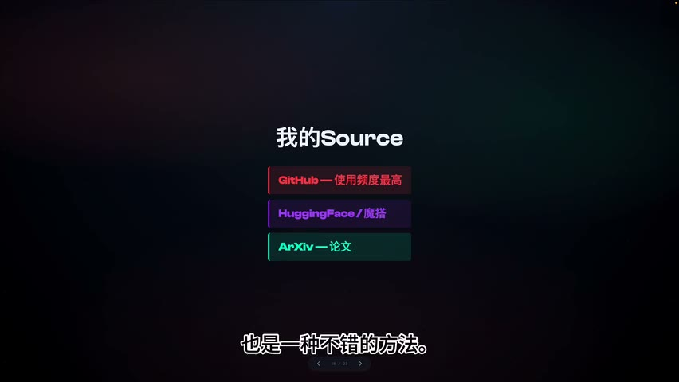

原视频 · 在线回看
点击后联网加载 B 站播放器；本地不下载整段视频。

原视频 · 在线回看
点击后联网加载 B 站播放器；本地不下载整段视频。
来源：聊一下 AI 时代怎么选取信息源｜UP 主：小天 fotos｜时长：7 分 12 秒｜打开视频｜阅读强度：深度
今天一个新模型，明天一个新工具，后天又有人说工作方式已经完全改变。我们原本只是想了解一下，刷完却多了好几件“必须赶快学”的事。收藏越来越多，心里也越来越着急：好像每条消息都重要，放过哪一条都有可能落后。可真要坐下来做自己的事情，又很难说清刚才那些消息到底能帮上什么忙。
这种着急常被称为 FOMO，也就是担心错过。面对不断更新的 AI 话题，单纯提高阅读速度很难解除这种压力。只要没有决定自己想参与到什么程度，任何新进展都可能看起来与自己有关。我们需要先回答一个更靠近自己的问题：我了解这些东西，是想用它完成什么？确定了这一点，才有办法判断一条信息值得读多深，哪些内容暂时知道名字就够了。
小天 fotos 有工程背景，也有创业经历。他给自己的上限设想，是借助 AI 做出有创新的产品，寻找新的商业机会。这个目标很大，未必每次探索都能走到那里，所以他还给学习保留了一个更小、更具体的用途：即使最后没有形成生意，学到的能力也可以用来制作工具，帮助孩子学习。这样，一次探索没有成功变成产品，并不等于此前的投入全部失去了意义。
这两个目标决定了他如何看待热点。DeepSeek R1 发布后，他也曾有很强的紧迫感，但接下来做的事情逐渐具体起来：了解强化学习，阅读相关材料，尝试一个自己能够承担的小规模训练案例。这里的强化学习，可以先理解为让模型在尝试之后得到反馈，再据此调整行为的一类学习方法。真正动手时，读懂原理、准备运行环境、理解训练结果，都比转发一条“模型变强了”的消息更费时间。这些困难也让一个模糊的热点变成了可以学习的问题。
需要分清这次个人实践的范围：小规模尝试能够帮助他理解训练过程，并不代表完整复现了一个大型模型，也不能据此推出相同的成本或能力。他的收获在于，强化学习逐渐进入了自己考虑产品的方式。了解 Manus 一类产品的工作思路之后，再看到相似的新工具，他也更容易判断哪些变化值得继续研究。过去学习的内容开始帮助他筛选下一批信息，学习便有了连续性。
对我们来说，有用的部分是这种选择标准。一个长期目标告诉你值得往哪里深入，一个具体用途让你知道眼前的知识可以用在哪里。如果当前最想做的是理解 AI 产品，就需要关注它怎样工作、用户为什么需要它；如果只是想改善日常工作，就可以围绕实际任务挑工具。两种参与方式所需的材料不同，没有必要用同一张追热点清单要求所有人。
接下来可以把接触到的信息分成三个部分：News、Source 和 Content。三个英文词先不用背，想清楚它们各自能帮我们做什么就好。一条消息告诉你发生了什么；原始材料让你接触真正发布出来的东西；讲解内容则帮助你读懂其中不熟悉的部分。同一个话题可能同时需要这三类信息，但阅读目的会随着阶段发生变化。
例如，你先在社交平台看到某个模型发布，这条消息让你知道有了一项新变化。等你想了解它为何受到关注，就需要寻找发布团队的介绍、研究论文、代码或模型文件。继续往下读，碰到不理解的训练方法，再找一篇讲解来补上知识。这样，阅读有一个正在解决的问题，不必把有关这个模型的所有评论都收进来。
| 信息类型 | 它主要帮助我们回答什么 | 阅读到什么程度比较合适 |
|---|---|---|
| 消息 News | 新出现了什么，它大致有什么用？ | 能判断与自己的目标是否有关。 |
| 原始材料 Source | 实际发布了什么，具体怎样使用或研究？ | 根据自己的问题查看论文、代码、模型或产品。 |
| 讲解内容 Content | 原始材料里读不懂的地方是什么意思？ | 补足当前缺少的理解，再继续自己的探索。 |
小天 fotos 使用最多的是 GitHub，其次是 Hugging Face 等模型平台，论文则按需要阅读。这个顺序与他的工程背景有关：代码和可以运行的东西更容易进入他的工作。GitHub 仓库可能提供实现、运行说明和训练框架；模型平台可以提供模型文件及使用信息；论文通常更集中地说明研究问题、方法与实验。它们给出的内容各有侧重，不能因为都围绕同一个名字，就认为读过其中一种便了解了全部。
这里的“原始材料”也需要看具体对象。一个代码仓库可能是发布团队自己的实现，也可能是其他人的复现。两者都可能有学习价值，但回答“原团队究竟做了什么”时，不能把复现者的选择直接算到原团队身上。Product Hunt 一类产品发现平台，则更适合作为寻找产品的入口；需要了解产品本身时，还要继续进入相应的产品页面。知道入口能提供什么，就不容易把入口当成最终答案。
强化学习的个人实践可以把这种关系串起来。小天 fotos 先尝试从论文理解方法，再到 GitHub 寻找别人如何复现、怎样组织训练，以及训练框架如何使用。之后，他会接触模型平台上的模型，尝试把自己理解的过程运行起来。碰到论文或代码里读不懂的地方，再借助讲解材料补课。论文、代码、模型和教程在同一个学习过程中相互接上。
假如只停留在消息层面，我们可能记住了“这个模型用了强化学习”，却仍不知道训练时哪些东西发生了变化。只看讲解也有另一种困难：讲解为了让人容易理解，会选择重点、省略条件，有时还会带入解释者自己的判断。当我们需要亲自运行或者认真比较方法时，被省略的细节又会变得重要。因此，讲解帮助我们跨过阅读门槛，原始材料则让问题继续落到具体对象上。
这也解释了为什么无需把“只读一手材料”变成新的负担。刚进入一个领域时，论文里可能每隔几行就有一个不认识的概念，直接从头硬读未必有效。先借助合适的讲解建立基本认识，再回去看原始材料，完全可以成为正常的学习路径。关键在于知道自己此刻缺少什么：是尚未发现某项进展，还是已经知道它存在，却没有理解它的工作方式。
讲解内容降低了学习门槛，同时也处在争取注意力的环境里。一个标题如果让人觉得“再不看就跟不上了”，更可能获得点击；一个能引起兴奋、担忧或争论的说法，也容易传播。小天 fotos 提到自己的创作体验：认真展开的方法内容，未必比模型评测更容易获得观看。这是他对自己创作经历的观察，说明传播效果与学习价值可能出现差别，不能据此认定所有热门内容都没有价值。
对读者而言，可以把这层关系放回最初的目标。内容激起了兴趣之后，继续问一句：它究竟帮助我理解了哪个问题？如果读完以后只剩“又有大事发生了”的紧迫感，却无法说清新能力是什么、与自己的事情有什么关系，那么当前得到的主要仍是消息。我们可以保留这个消息，等它与具体任务发生联系时再深入，无需立即把它变成新的学习负担。
小天 fotos 也喜欢听创始人、投资人和开发者的长访谈。这类内容有时能够保留做事时的理由、犹豫和背景，比一句浓缩的结论更容易让人理解事情如何发生。不过，个人讲述仍然带着立场和经历，访谈形式本身不会保证判断正确。我们可以从中学习对方怎样观察问题，同时保留对具体判断的疑问。
最终，信息选择可以回到一个很朴素的顺序：先有自己关心的事情，借消息发现有关的新变化，走进对应的产品或研究材料，再用讲解补上不理解的部分。这个顺序允许我们错过很多与眼前目标无关的内容。只要留下来的材料能够相互连接，帮助我们完成一次真正的理解或使用，就已经比不断扩大收藏更接近学习的目的。
先确定自己希望怎样参与 AI，再决定哪些信息值得投入时间。长期目标提供方向，眼前用途让学习的价值更加具体。
消息负责发现变化，原始材料提供实际研究或使用的对象，讲解帮助理解难点。它们可以反复配合，不需要规定所有人只能从同一种入口开始。
内容受传播激励影响，热度与学习价值可能不同。读完后能说清自己解决了哪个问题，是判断这次阅读有没有帮助的一个实际依据。
同样是一条新模型发布消息，想做研究、想开发产品和想改善日常工作的人，接下来各自需要寻找什么？
如果你已经看懂一篇通俗讲解，却仍然无法运行相应方法，接下来缺少的可能是哪类材料？
一条内容让你很着急，却没有帮助你理解具体问题时，你是否需要立即继续追下去？